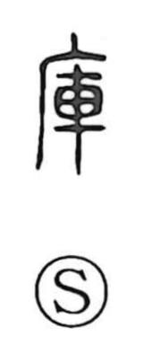

庫

Kun: kura | On: ko
storehouse ・ warehouse ・ depot
Explanation
A compound formed from the shelter radical 广, which depicts a building set against a cliff, and 車, the war chariot. It originally named the building where chariots were gathered and housed, and by extension came to mean any kura—storehouse for collected goods. Because chariots were drawn by two horses, such places naturally included both sheds for the vehicles and nearby stables. The idea appears in compounds like 府庫, repositories for important writings and goods, and 武庫, a “martial storehouse,” used figuratively of outstanding prowess in arms. Storing a war chariot was accompanied by purification and exorcism using sacrificial blood, so these storehouses were often attached to sacred precincts.